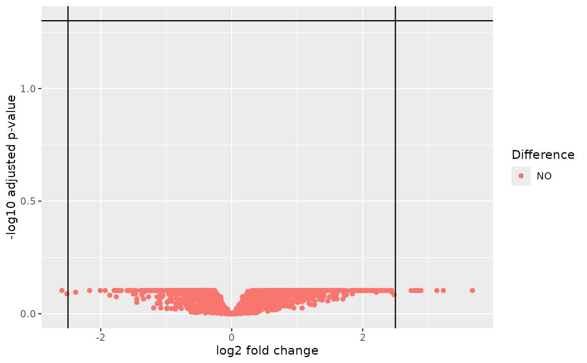

![[Experimental]](figures/lifecycle-experimental.svg)
The diff_expression() function performs differential expression analysis
using a method of preference.
A corresponding autoplot() method is visualizing the results as a volcano plot.
Usage
diff_expression(object, group, method = c("voom", "deseq2"), ...)
# S4 method for class 'HermesDataDiffExpr'
autoplot(object, adj_p_val_thresh = 0.05, log2_fc_thresh = 2.5)Arguments
- object
(
AnyHermesData)
input. Note that this function only uses the original counts for analysis, so this does not need to be normalized.- group
(
string)
name of factor variable with 2 levels incolData(object). These 2 levels will be compared in the differential expression analysis.- method
(
string)
method for differential expression analysis, see details below.- ...
additional arguments passed to the helper function associated with the selected method.
- adj_p_val_thresh
(
proportion)
threshold on the adjusted p-values (y-axis) to flag significance.- log2_fc_thresh
(
number)
threshold on the absolute log2 fold-change (x-axis) to flag up- or down-regulation of transcription.
Value
A HermesDataDiffExpr object which is a data frame with the following columns for each gene
in the HermesData object:
log2_fc(the estimate of the log2 fold change between the 2 levels of the provided factor)stat(the test statistic, which one depends on the method used)p_val(the raw p-value)adj_p_val(the multiplicity adjusted p-value value)
Details
Possible method choices are:
voom: uses
limma::voom(), seeh_diff_expr_voom()for details.deseq2: usesDESeq2::DESeq(), seeh_diff_expr_deseq2()for details.
Note
We provide the
df_cols_to_factor()utility function that makes it easy to convert thecolData()character and logical variables to factors, so that they can be subsequently used asgroupinputs. See the example.In order to avoid a warning when using
deseq2, it can be necessary to specifyfitType = "local"as additional argument. This could e.g. be the case when only few samples are present in which case the default parametric dispersions estimation will not work.
Examples
object <- hermes_data %>%
add_quality_flags() %>%
filter()
# Convert character and logical to factor variables in `colData`,
# including the below used `group` variable.
colData(object) <- df_cols_to_factor(colData(object))
res1 <- diff_expression(object, group = "SEX", method = "voom")
head(res1)
#> log2_fc stat p_val adj_p_val
#> GeneID:344558 1.4951365 3.768257 0.001217934 0.7815544
#> GeneID:51227 -1.0670584 -3.766113 0.001224023 0.7815544
#> GeneID:10280 -0.7518694 -3.461800 0.002478362 0.7815544
#> GeneID:9435 1.8555120 3.414364 0.002764727 0.7815544
#> GeneID:51575 -0.7238103 -3.326330 0.003384750 0.7815544
#> GeneID:123036 2.8900474 3.246333 0.004064925 0.7815544
res2 <- diff_expression(object, group = "SEX", method = "deseq2")
head(res2)
#> log2_fc stat p_val adj_p_val
#> GeneID:64344 -2.9129064 -4.864176 1.149347e-06 0.002694069
#> GeneID:9002 2.3092323 4.215740 2.489604e-05 0.020061145
#> GeneID:167681 -4.0974632 -4.201788 2.648146e-05 0.020061145
#> GeneID:51227 -1.1573425 -4.143302 3.423404e-05 0.020061145
#> GeneID:4359 2.8926465 4.004010 6.227765e-05 0.029195764
#> GeneID:10280 -0.7997803 -3.876433 1.059991e-04 0.031057749
# Pass method arguments to the internally used helper functions.
res3 <- diff_expression(object, group = "SEX", method = "voom", robust = TRUE, trend = TRUE)
head(res3)
#> log2_fc stat p_val adj_p_val
#> GeneID:51227 -1.0670584 -3.765145 0.001226726 0.7884829
#> GeneID:344558 1.4951365 3.759186 0.001243851 0.7884829
#> GeneID:10280 -0.7518694 -3.467915 0.002443545 0.7884829
#> GeneID:9435 1.8555120 3.390300 0.002922073 0.7884829
#> GeneID:51575 -0.7238103 -3.325713 0.003389426 0.7884829
#> GeneID:123036 2.8900474 3.232786 0.004230256 0.7884829
res4 <- diff_expression(object, group = "SEX", method = "deseq2", fitType = "local")
head(res4)
#> log2_fc stat p_val adj_p_val
#> GeneID:64344 -2.9128847 -4.892128 9.975152e-07 0.002338176
#> GeneID:9002 2.3091854 4.256818 2.073572e-05 0.014702529
#> GeneID:167681 -4.0975071 -4.300519 1.703986e-05 0.014702529
#> GeneID:51227 -1.1573487 -4.213992 2.508964e-05 0.014702529
#> GeneID:4359 2.8925392 4.055798 4.996349e-05 0.021309899
#> GeneID:10280 -0.7997974 -3.958566 7.540117e-05 0.021309899
# Create the corresponding volcano plots.
autoplot(res1)
autoplot(res3)
